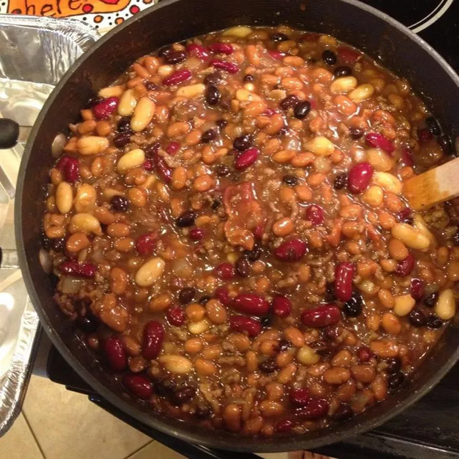

Home
Beans, Beans and Beans

Description
Beans, Beans, and Beans is a hearty and satisfying dish featuring a flavorful mix
of baked beans, kidney beans, and lima beans. If you're a fan of beans,
this recipe is sure to hit the spot.
Ingredients
- 2 ounces bacon
- 1 pound ground beef
- 2 large onions, chopped
- 4 (15 ounce) cans pork and beans
- 1 (18 ounce) bottle honey barbecue sauce
- 1 (15 ounce) can kidney beans, rinsed and drained
- 1 (15 ounce) can lima beans, rinsed and drained
- 1 (15 ounce) can black beans, rinsed and drained
- ½ cup packed brown sugar
- 3 tablespoons apple cider vinegar
- 1 tablespoon liquid smoke flavoring (Optional)
- 1 teaspoon salt
- ½ teaspoon ground black pepper
Steps
- Preheat the oven to 350 degrees F (175 degrees C).
-
Cook bacon in a large, deep skillet over medium-high heat, turning occasionally, until evenly browned, about 10 minutes. Drain on a paper towel-lined plate. Cool, then crumble.
-
Meanwhile, cook and stir ground beef and onions in a large skillet over medium heat until beef is no longer pink, breaking it apart as it cooks, about 10 minutes. Drain excess grease. Transfer beef and onions to a large Dutch oven. Stir in crumbled bacon, pork and beans, barbecue sauce, kidney beans, lima beans, black beans, brown sugar, cider vinegar, liquid smoke, salt, and black pepper.
-
Bake, covered, in the preheated oven until bubbling, about 1 hour.